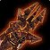

Rising Tide
Rising TideRising Tide208 to 313 damage, speed 2.6, 33 stamina, 44 attack power, 21 hit rating (1.33%)Drops from High Warlord Naj'entus, Black Temple
208 to 313 damage, speed 2.6, 33 stamina, 44 attack power, 21 hit rating
(1.33%)
Drops from High Warlord Naj'entus, Black Temple
What influencers say
Showing 5 of 7 captured remarks, widest reach first, with every view
represented
Sarthe
Sarthe · 57:17
77k views
Speaks well of it
Sarthe is enthusiastic about it, sending it to warriors with fury first,
praising its high top-end damage and slow speed.
Zatar (Classic Wow Builds)
Zatar (Classic Wow Builds) · 29:52
67k views
It depends
Zatar gives it to an orc fury warrior first for the expertise, calling
it their best offhand, and says it is only an okay item for non-orc fury
or some enhancement setups.
Joardee
Joardee · 71:41
23k views
It depends
Joardee thinks no alliance or human player wants it, suggests an orc axe
warrior or possibly an enhancement shaman, and concludes it should not
be contested.
Darkest_TV
Darkest_TV · 4:01
8k views
It depends
Darkest says he has prioritised it only to hold him over until he gets
the axes he actually wants, switching to Syphon of the Nathrezim if that
fails.
Anker_64
Anker_64 · 37:00
4k views
It depends
Anker offers it as a main or off hand option specifically for orc fury
warriors who do not want to grind PvP weapons.
Showing all 4 spec cards.
No specs are selected, so no cards are showing. Use Show every spec to bring all of them back.
Fury Warrior
not yet decided
Constraints
Hit cap9%special
attacks
Improved Faerie Fire-3%assumed
Gear needs6%
The Precision talent is reachable in the Fury tree and this raid's build
does not take it.
Entry8.8%clear
by 2.8%
Tier hands10.8%clear
by 4.8%
Tier hands and head9.4%clear
by 3.5%
Dual-wields: white swings miss until 28%, which nothing in this patch
reaches, so hit past the cap still buys accuracy.
White swings stop critting at 50.5%, measured at the special-attack hit
cap.
Nothing rostered reaches it this phase, so crit stays linear all tier.
No haste threshold to protect.
Delta
Rising
TideRising Tide208 to 313 damage, speed 2.6, 33 stamina, 44
attack power, 21 hit rating (1.33%)Drops from High Warlord Naj'entus, Black
Temple in Fury Warrior
terms
| Stat | Over best weapon, Black Temple Warglaive of Azzinoth (Main Hand)Warglaive of Azzinoth (Main Hand)214 to 398 damage, speed 2.8, 22 agility, 29 stamina, 44 attack power, 21 hit rating (1.33%)Drops from Illidan Stormrage, Black Temple | Over second best, Black Temple Syphon of the NathrezimSyphon of the Nathrezim196 to 365 damage, speed 2.8, 50 attack powerDrops from Supremus, Black Temple | Over third best, Blacksmithing DragonstrikeDragonstrike184 to 343 damage, speed 2.7, 19 stamina | Over fourth best, Tempest Keep Rod of the Sun KingRod of the Sun King189 to 352 damage, speed 2.7, 52 attack powerDrops from Kael'thas Sunstrider, Tempest Keep | Over Season 3 arena, Season 3 Vengeful Gladiator's Right RipperVengeful Gladiator's Right Ripper187 to 349 damage, speed 2.6, 30 stamina, 34 attack power, 8 hit rating (0.51%), 21 crit rating (0.95%), 49 armor penetration, 12 resilience | Over Season 2 arena, Season 2 Merciless Gladiator's Right RipperMerciless Gladiator's Right Ripper177 to 330 damage, speed 2.6, 27 stamina, 30 attack power, 10 hit rating (0.63%), 19 crit rating (0.86%), 12 resilience | Over carried into the tier, Blacksmithing DragonstrikeDragonstrike184 to 343 damage, speed 2.7, 19 stamina | |||||||
|---|---|---|---|---|---|---|---|---|---|---|---|---|---|---|
| Change | Converted | Change | Converted | Change | Converted | Change | Converted | Change | Converted | Change | Converted | Change | Converted | |
| agility | -22 | 0 attack power · -0.67% melee crit | 0 | 0 | 0 | 0 | 0 | 0 | ||||||
| stamina | +4 | +33 | +14 | +33 | +3 | +6 | +14 | |||||||
| attack power | 0 | -6 | +44 | -8 | +10 | +14 | +44 | |||||||
| hit | 0 | +21 | +1.33% | +21 | +1.33% | +21 | +1.33% | +13 | +0.82% | +11 | +0.70% | +21 | +1.33% | |
| crit | 0 | 0 | 0 | 0 | -21 | -0.95% | -19 | -0.86% | 0 | |||||
| armor penetration | 0 | 0 | 0 | 0 | -49 | 0 | 0 | |||||||
| resilience | 0 | 0 | 0 | 0 | -12 | -12 | 0 | |||||||
| Net | -0.67% melee crit | -6 attack power +1.33% melee and ranged hit | +44 attack power +1.33% melee and ranged hit | -8 attack power +1.33% melee and ranged hit | +10 attack power +0.82% melee and ranged hit -0.95% melee crit | +14 attack power +0.70% melee and ranged hit -0.86% melee crit | +44 attack power +1.33% melee and ranged hit | |||||||
Protection Warrior
not yet decided
Constraints
Hit cap9%threat
floor
Improved Faerie Fire-3%assumed
Gear needs6%
The Precision talent sits in the Fury tree, which this build does not
reach.
Entry6.7%clear
by 0.7%
Tier hands9.9%clear
by 3.9%
Tier hands and head9.9%clear
by 3.9%
The constraint that decides this spec's gear is crit immunity, which it
reaches at 490 defense skill, or 284 defense rating from gear.
That rating figure assumes Anticipation at 5 ranks, which supplies 20
defense skill. Without it the requirement is 332 rating.
Pushing crushing blows off the attack table needs 102.4% of miss, dodge,
parry and block on the character sheet.
White swings stop critting at 69.5%, measured at the special-attack hit
cap.
Nothing rostered reaches it this phase, so crit stays linear all tier.
No haste threshold to protect.
Delta
Rising
TideRising Tide208 to 313 damage, speed 2.6, 33 stamina, 44
attack power, 21 hit rating (1.33%)Drops from High Warlord Naj'entus, Black
Temple in Protection
Warrior terms
| Stat | Over best weapon, Black Temple Warglaive of Azzinoth (Main Hand)Warglaive of Azzinoth (Main Hand)214 to 398 damage, speed 2.8, 22 agility, 29 stamina, 44 attack power, 21 hit rating (1.33%)Drops from Illidan Stormrage, Black Temple | Over second best, Black Temple Blade of SavageryBlade of Savagery98 to 183 damage, speed 1.4, 19 stamina, 44 attack power, 15 hit rating (0.95%), 22 crit rating (1.00%)Drops from Mother Shahraz, Black Temple | Over third best, Black Temple The BrutalizerThe Brutalizer128 to 193 damage, speed 1.6, 33 stamina, 21 expertise rating, 22 defense ratingDrops from Supremus, Black Temple | Over fourth best, Serpentshrine Cavern Fang of VashjFang of Vashj144 to 217 damage, speed 1.8, 19 stamina, 56 attack power, 21 expertise ratingDrops from Lady Vashj, Serpentshrine Cavern | Over Season 3 arena, Season 3 Vengeful Gladiator's Right RipperVengeful Gladiator's Right Ripper187 to 349 damage, speed 2.6, 30 stamina, 34 attack power, 8 hit rating (0.51%), 21 crit rating (0.95%), 49 armor penetration, 12 resilience | Over Season 2 arena, Season 2 Merciless Gladiator's SlicerMerciless Gladiator's Slicer203 to 305 damage, speed 2.6, 27 stamina, 30 attack power, 10 hit rating (0.63%), 19 crit rating (0.86%), 12 resilience | Over carried into the tier, crafted DragonstrikeDragonstrike184 to 343 damage, speed 2.7, 19 stamina | |||||||
|---|---|---|---|---|---|---|---|---|---|---|---|---|---|---|
| Change | Converted | Change | Converted | Change | Converted | Change | Converted | Change | Converted | Change | Converted | Change | Converted | |
| agility | -22 | 0 attack power · -0.67% melee crit · -22 agility | 0 | 0 | 0 | 0 | 0 | 0 | ||||||
| stamina | +4 | +4 stamina | +14 | +14 stamina | 0 | +14 | +14 stamina | +3 | +3 stamina | +6 | +6 stamina | +14 | +14 stamina | |
| attack power | 0 | 0 | +44 | -12 | +10 | +14 | +44 | |||||||
| hit | 0 | +6 | +0.38% | +21 | +1.33% | +21 | +1.33% | +13 | +0.82% | +11 | +0.70% | +21 | +1.33% | |
| crit | 0 | -22 | -1.00% | 0 | 0 | -21 | -0.95% | -19 | -0.86% | 0 | ||||
| expertise rating | 0 | 0 | -21 | -21 | 0 | 0 | 0 | |||||||
| armor penetration | 0 | 0 | 0 | 0 | -49 | 0 | 0 | |||||||
| defense rating | 0 | 0 | -22 | 0 | 0 | 0 | 0 | |||||||
| resilience | 0 | 0 | 0 | 0 | -12 | -12 | 0 | |||||||
| Net | -22 agility +4 stamina | +14 stamina | +14 stamina | +3 stamina | +6 stamina | +14 stamina | ||||||||
Protection Paladin
not yet decided
Constraints
Hit cap9%threat
floor
Precision-3%
Improved Faerie Fire-3%assumed
Gear needs3%
Entry1%short by
2%
Tier hands2.7%short
by 0.3%
Closed by 1 hit gem against 10 sockets in the set.
Tier hands and head2.7%short
by 0.3%
Closed by 1 hit gem against 10 sockets in the set.
Hit cap16%threat
floor
Precision-3%
Gear needs13.1%
Entry0%short by
13.1%
Tier hands0%short by
13.1%
Closed by 1 hit gem against 10 sockets in the set.
Tier hands and head1.3%short
by 11.7%
Closed by 1 hit gem against 10 sockets in the set.
The constraint that decides this spec's gear is crit immunity, which it
reaches at 490 defense skill, or 284 defense rating from gear.
That rating figure assumes Anticipation at 5 ranks, which supplies 20
defense skill. Without it the requirement is 332 rating.
Pushing crushing blows off the attack table needs 102.4% of miss, dodge,
parry and block on the character sheet.
White swings stop critting at 69.5%, measured at the special-attack hit
cap.
Nothing rostered reaches it this phase, so crit stays linear all tier.
No haste threshold to protect.
Delta
Rising
TideRising Tide208 to 313 damage, speed 2.6, 33 stamina, 44
attack power, 21 hit rating (1.33%)Drops from High Warlord Naj'entus, Black
Temple in Protection
Paladin terms
| Stat | Over best weapon, Hyjal Summit Tempest of ChaosTempest of Chaos17 to 132 damage, speed 1.8, 30 stamina, 22 intellect, 259 spell damage, 259 healing power, 17 spell hit rating (1.35%), 24 spell crit rating (1.09%)Drops from Archimonde, Mount Hyjal | Over second best, Hyjal Summit Hammer of JudgementHammer of Judgement20 to 129 damage, speed 1.8, 33 stamina, 22 intellect, 236 spell damage, 236 healing power, 22 spell hit rating (1.74%)Drops from Trash / zone drop, Black Temple; Trash / zone drop, Mount Hyjal | Over third best, Serpentshrine Cavern Fang of the LeviathanFang of the Leviathan22 to 127 damage, speed 1.8, 28 stamina, 20 intellect, 221 spell damage, 221 healing power, 21 spell crit rating (0.95%)Drops from Leotheras the Blind, Serpentshrine Cavern | Over fourth best, Gruul's Lair Bloodmaw Magus-BladeBloodmaw Magus-Blade36 to 136 damage, speed 1.8, 16 stamina, 15 intellect, 203 spell damage, 203 healing power, 25 spell crit rating (1.13%)Drops from Gruul the Dragonkiller, Gruul's Lair | Over Season 3 arena, Season 3 Vengeful Gladiator's GavelVengeful Gladiator's Gavel16 to 116 damage, speed 1.6, 30 stamina, 20 intellect, 247 spell damage, 247 healing power, 17 spell hit rating (1.35%), 18 resilience | Over Season 2 arena, Season 2 Merciless Gladiator's GavelMerciless Gladiator's Gavel19 to 113 damage, speed 1.6, 27 stamina, 18 intellect, 225 spell damage, 225 healing power, 15 spell hit rating (1.19%), 18 resilience | Over carried into the tier, Serpentshrine Cavern Fang of the LeviathanFang of the Leviathan22 to 127 damage, speed 1.8, 28 stamina, 20 intellect, 221 spell damage, 221 healing power, 21 spell crit rating (0.95%)Drops from Leotheras the Blind, Serpentshrine Cavern | |||||||
|---|---|---|---|---|---|---|---|---|---|---|---|---|---|---|
| Change | Converted | Change | Converted | Change | Converted | Change | Converted | Change | Converted | Change | Converted | Change | Converted | |
| stamina | +3 | +3 stamina | 0 | +5 | +5 stamina | +17 | +17 stamina | +3 | +3 stamina | +6 | +6 stamina | +5 | +5 stamina | |
| intellect | -22 | -22 intellect | -22 | -22 intellect | -20 | -20 intellect | -15 | -15 intellect | -20 | -20 intellect | -18 | -18 intellect | -20 | -20 intellect |
| attack power | +44 | +44 | +44 | +44 | +44 | +44 | +44 | |||||||
| hit | +21 | +1.33% | +21 | +1.33% | +21 | +1.33% | +21 | +1.33% | +21 | +1.33% | +21 | +1.33% | +21 | +1.33% |
| spell damage | -259 | -236 | -221 | -203 | -247 | -225 | -221 | |||||||
| healing power | -259 | -236 | -221 | -203 | -247 | -225 | -221 | |||||||
| spell hit | -17 | -1.35% | -22 | -1.74% | 0 | 0 | -17 | -1.35% | -15 | -1.19% | 0 | |||
| spell crit | -24 | -1.09% | 0 | -21 | -0.95% | -25 | -1.13% | 0 | 0 | -21 | -0.95% | |||
| resilience | 0 | 0 | 0 | 0 | -18 | -18 | 0 | |||||||
| Net | +3 stamina -22 intellect | -22 intellect | +5 stamina -20 intellect | +17 stamina -15 intellect | +3 stamina -20 intellect | +6 stamina -18 intellect | +5 stamina -20 intellect | |||||||
Enhancement Shaman
not yet decided
Constraints
Hit cap9%special
attacks
Dual Wield Specialization-6%
Nature's Guidance-3%
Improved Faerie Fire-3%assumed
Gear needs0%
Entry9.8%clear
by 12.9%
Talent and the assumed raid debuff cover this cap outright, so every
point of hit on an item is surplus.
Tier hands12.6%clear
by 15.6%
Tier hands, keeps T5 helm12.6%clear
by 15.6%
Tier rows assume both reachable tokens. The published guide states in
its own words that neither Tier 6 set bonus is worth chasing for this
spec.
Dual-wields: white swings miss until 28%, which nothing in this patch
reaches, so hit past the cap still buys accuracy.
White swings stop critting at 50.5%, measured at the special-attack hit
cap.
Nothing rostered reaches it this phase, so crit stays linear all tier.
No haste threshold to protect.
Delta
Rising
TideRising Tide208 to 313 damage, speed 2.6, 33 stamina, 44
attack power, 21 hit rating (1.33%)Drops from High Warlord Naj'entus, Black
Temple in Enhancement
Shaman terms
| Stat | Over best weapon, Black Temple Swiftsteel BludgeonSwiftsteel Bludgeon105 to 196 damage, speed 1.5, 40 attack power, 19 hit rating (1.20%), 27 haste ratingDrops from Trash / zone drop, Black Temple | Over second best, Blacksmithing DragonstrikeDragonstrike184 to 343 damage, speed 2.7, 19 stamina | Over third best, Hyjal Summit
 Claw of Molten FuryClaw of Molten Fury216 to 325 damage, speed 2.7, 20 agility, 28 stamina, 38 attack powerDrops from Trash / zone drop, Mount Hyjal |
Over fourth best, Tempest Keep Talon of the PhoenixTalon of the Phoenix182 to 339 damage, speed 2.7, 52 attack power, 15 hit rating (0.95%), 19 crit rating (0.86%)Drops from Al'ar, Tempest Keep | Over Season 3 arena, Season 3 Vengeful Gladiator's Right RipperVengeful Gladiator's Right Ripper187 to 349 damage, speed 2.6, 30 stamina, 34 attack power, 8 hit rating (0.51%), 21 crit rating (0.95%), 49 armor penetration, 12 resilience | Over Season 2 arena, Season 2 Merciless Gladiator's Right RipperMerciless Gladiator's Right Ripper177 to 330 damage, speed 2.6, 27 stamina, 30 attack power, 10 hit rating (0.63%), 19 crit rating (0.86%), 12 resilience | Over carried into the tier, Blacksmithing Wicked Edge of the PlanesWicked Edge of the Planes184 to 343 damage, speed 2.7, 48 attack power, 23 crit rating (1.04%) | |||||||
|---|---|---|---|---|---|---|---|---|---|---|---|---|---|---|
| Change | Converted | Change | Converted | Change | Converted | Change | Converted | Change | Converted | Change | Converted | Change | Converted | |
| agility | 0 | 0 | -20 | 0 attack power · -0.80% melee crit | 0 | 0 | 0 | 0 | ||||||
| stamina | +33 | +14 | +5 | +33 | +3 | +6 | +33 | |||||||
| attack power | +4 | +44 | +6 | -8 | +10 | +14 | -4 | |||||||
| hit | +2 | +0.13% | +21 | +1.33% | +21 | +1.33% | +6 | +0.38% | +13 | +0.82% | +11 | +0.70% | +21 | +1.33% |
| crit | 0 | 0 | 0 | -19 | -0.86% | -21 | -0.95% | -19 | -0.86% | -23 | -1.04% | |||
| haste rating | -27 | 0 | 0 | 0 | 0 | 0 | 0 | |||||||
| armor penetration | 0 | 0 | 0 | 0 | -49 | 0 | 0 | |||||||
| resilience | 0 | 0 | 0 | 0 | -12 | -12 | 0 | |||||||
| Net | +4 attack power +0.13% melee and ranged hit | +44 attack power +1.33% melee and ranged hit | +6 attack power -0.80% melee crit +1.33% melee and ranged hit | -8 attack power +0.38% melee and ranged hit -0.86% melee crit | +10 attack power +0.82% melee and ranged hit -0.95% melee crit | +14 attack power +0.70% melee and ranged hit -0.86% melee crit | -4 attack power +1.33% melee and ranged hit -1.04% melee crit | |||||||